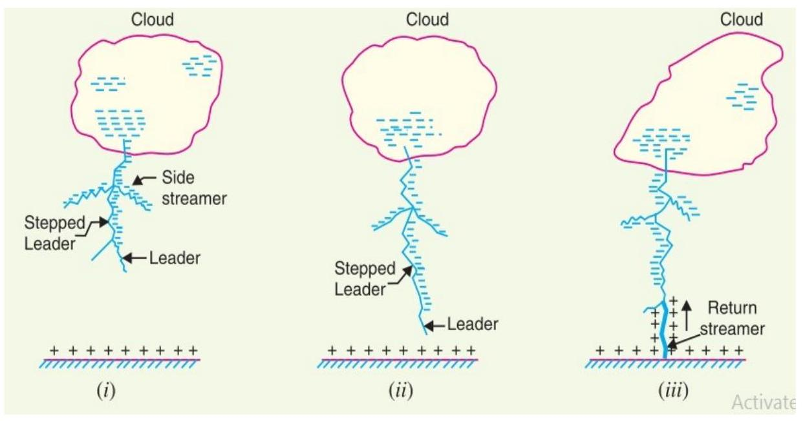
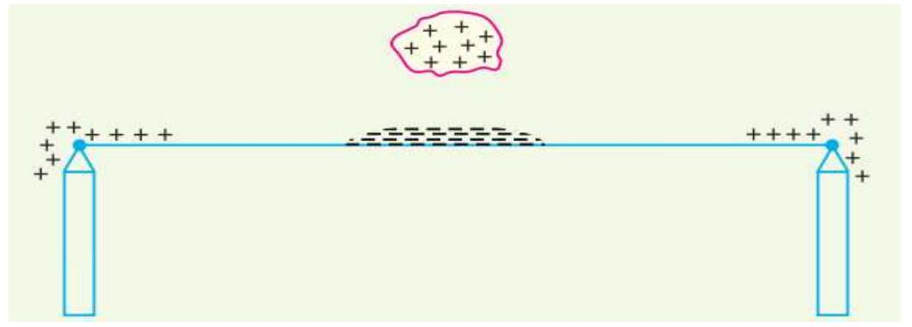

Lightning Protection
LIGHTNING PROTECTION
Lightning is defined as an electric discharge between cloud and earth, between clouds or between the charge centers of the same cloud.
How Does Lightning Occur?
- During the uprush of warm moist air from earth, the friction between the air and the tiny particles of water causes the building up of charges.
- When drops of water are formed, the larger drops become positively charged and the smaller drops become negatively charged.
- When the drops of water accumulate, they form clouds, and hence cloud may possess either a positive or a negative charge, depending upon the charge of drops of water they contain.
- The charge on a cloud may become so great that it may discharge to another cloud or to earth and we call this discharge as lightning.
- The thunder which accompanies lightning is due to the fact that lightning suddenly heats up the air, thereby causing it to expand. The surrounding air pushes the expanded air back and forth causing the wave motion of air which we recognize as thunder.
Mechanism of Lightning Discharge
- 87% of all lightning strokes result from negatively and only 13% from positively charged clouds
- There occur about 100 lightning strokes per second.
- Lightning discharge may have currents in the range of 10 kA to 90 kA
Types of Lightning Strokes
There are two main ways in which a lightning may strike the power system (e.g. overhead lines, towers, sub-stations etc.), namely;
- Direct stroke
- Indirect stroke
- Direct stroke
Direct stroke lightning is subdivided into two types:
- Direct stroke type A
- direct stroke type B
- Direct Stroke Type A:
In the direct lightning strokes, the cloud attains a large amount of charge and induces an opposite charge on taller structures such as temple, churches or mosques. When the intensity of electrostatic field becomes sufficiently great to ionise the neighbouring air, the air break down and discharge takes place between the cloud and the structure, as shown in Fig (i). Such types of discharge take a long time to produce, and it strikes the highest and the most sharply pointed building in the neighbourhood.
- Direct Strike Type B:
Consider the three clouds, clouds P and R are positively charged, and cloud Q is negatively charged as shown in the figure (ii) above. The potential of cloud $R$ is reduced due to the presence of the charged cloud Q. On the flash over from Cloud P to Cloud Q, both these clouds are discharged rapidly, and cloud $R$ assumes a much potential and flashes to earth very rapidly. It is the most dangerous strokes because it can ignore taller structures and reach directly to the ground.
- Indirect Stroke:
In the indirect stroke, charged clouds electrostatically induce opposite charges on the transmission below it as shown below. The positively charged cloud induces negative charges on the portion of the line directly below by electrostatic induction. The induced negative charges in turn induces positive charges on the far end portions of the line. These far end positive charges build up in potential and finally discharges to the earth.
Majority of the surges in a transmission line are caused by indirect lightning strokes
LIGHTNING PROTECTION SYSTEM (LPS)
- The high voltage currents from a lightning strike will always take the path of least resistance to ground. A lightning protection system (LPS) can protect a structure from damage caused by being struck by lightning by providing a low-resistance path to ground for the lightning to follow and disperse.
- An LPS does not attract lightning, and cannot dissipate lightning, it simply provides fire and structural damage protection by preventing lightning from passing through building materials themselves.
- Buildings most at risk are those at high altitudes, on hilltops or hillsides, in isolated positions and tall towers and chimneys.
HAZARDS OF A LIGHTNING STRIKE
In the absence of an LPS, a lightning strike may use any conductor as a path to reach ground, which could include phone cables, power cables, utilities such as water or gas pipes, or the structure itself if it is a steel frame.
Some of the main hazards presented by a lightning strike to a building include:
- Destructive fires- Fire caused by lightning may igniting flammable materials or overheating electrical wiring.
- Human/livestock injuries and/or fatalities- lightning strokes may cause fires or other accidents that may cause severe human injuries or even death.
- Side flashes- when lightning jumps through the air to reach a bettergrounded conductor.
- Structural damage to buildings and properties- Building components can be damaged by explosive shock waves, glass shattered, concrete and plaster fragmented, and so on.
- Damage to electrical appliances- Any electrical appliance plugged into a circuit may be badly damaged.
- The air inside porous materials such as masonry may expand rapidly.
- Materials containing moisture from humidity or rain may flash to steam.
- Other materials can reach their plastic limit and melt or ignite.